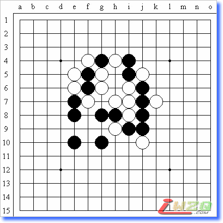
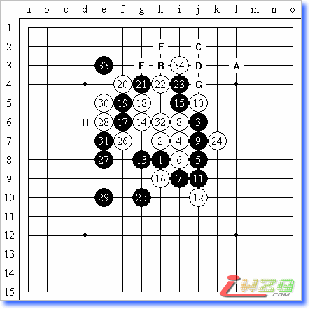
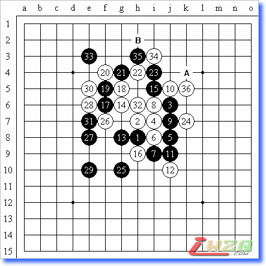
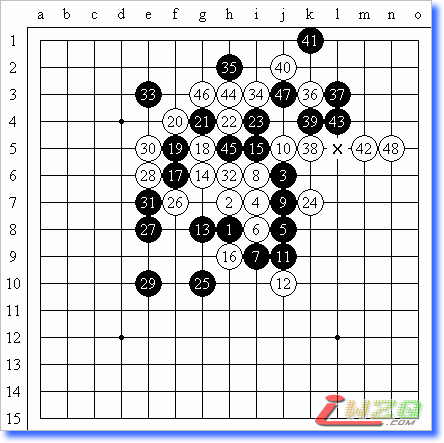
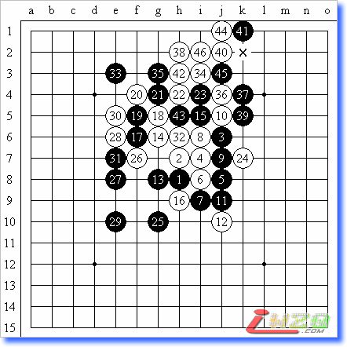

五段实力白先习题（白山黑水）
#1 五段实力白先习题（白山黑水） 作者：有志青年 发表时间：2008-3-19 17:41:58

出题人：顾炜 八段
白先，问题如下：
1、黑胜；
2、白胜；
3、平衡。
（正确解答实力评估：30分钟内不借助任何辅助工具解答正确，五段）
#2 Re:五段实力白先习题（白山黑水） 作者：有志青年 发表时间：2008-3-19 17:45:13
本题是一道实战题，给出的三个选项其实比较容易判断，关键是怎么证明结论。这道题目的要求就是在看似窘迫的局面下找到唯一的制胜方法，因为要将看似分散的白棋紧密联系起来，所以需要考虑和验证的变化很多，因此才评定为解题实力达到五段。
解题思路：黑棋在下方所积聚的势力是白棋无法化解的，白棋如果想胜就只能寻求一条死中求活的途径。白棋不能枉动唯一的活二，因为那只会造成速败，因此，这时唯一的考虑点就是充分利用白棋的三个看似关联不大的绵三，于是就有了32、34的妙手。

图1
白32、34是妙手，尤其34后，白有A、B、D、E的VCF胜法，如黑防在H，则白还有A到G的胜法。

图2
黑35的防御后，白36一子在A、B有双杀

图3
黑35强防，白36、38妙手，此后抓黑X点三三禁手。

图4
黑35意外的强防，白36最强，此后抓黑X点四四禁手。
#3 Re:五段实力白先习题（白山黑水） 作者：samaki 发表时间：2008-3-26 9:00:35
32是必须 34是妙手#4 Re:五段实力白先习题（白山黑水） 作者：汪洋孤舟 发表时间：2008-4-24 0:50:21
不懂！我太差了！
#5 Re:五段实力白先习题（白山黑水） 作者：wsmlx 发表时间：2008-5-1 0:17:19
好,好厉害啊...看完答案发现自己完全想偏了.......#6 Re:五段实力白先习题（白山黑水） 作者：皮洛曹 发表时间：2008-5-4 17:23:23
34的等着,妙!看着答案一步步消化.#7 Re:五段实力白先习题（白山黑水） 作者：自由的天空 发表时间：2008-5-7 11:07:21
32 34 都想到了 但是35的G3强防中37并不只有那一个防点 这个题根本没解出来
#8 Re:五段实力白先习题（白山黑水） 作者：自由的天空 发表时间：2008-5-7 11:08:57
37如果在L3？四四禁就不成立了#9 Re:五段实力白先习题（白山黑水） 作者：≈★诚心★≈ 发表时间：2010-1-5 16:17:19
很强饿 。 。。。。。。。。。。。。。。。。 。。。。。。。。。。。。。。。。。。。。。 。。。。。。。。。。。。。。。。。。。#10 Re:五段实力白先习题（白山黑水） 作者：小帮帮 发表时间：2010-1-5 17:28:27
顾伟是8段的？不借助任何辅助工具，包括用打谱软件摆棋和用真棋摆，只允许目算，是吧？#11 Re:五段实力白先习题（白山黑水） 作者：小帮帮 发表时间：2010-1-5 17:52:53
这道题好像只有做题价值，没有实战价值，感觉漏杀严重的#12 Re:五段实力白先习题（白山黑水） 作者：行云流水 发表时间：2010-1-5 23:46:00
这题目是一局实战。不过实战的手顺不是这么下出来的而已，所以题目没有给出数字，但是解题则必须要有数字的。［ 五子痴 于 2010-1-6 10:01:45 时花20金币送鲜花一朵］
#13 Re:五段实力白先习题（白山黑水） 作者：水龙吟 发表时间：2010-1-19 19:31:01
35走H2白怎么杀#14 Re:五段实力白先习题（白山黑水） 作者：行云流水 发表时间：2010-1-19 21:19:49
35走H2，图3不是给出胜法了？！#15 Re:五段实力白先习题（白山黑水） 作者：水 发表时间：2010-1-20 2:13:52
老师白34直接向上跳三不是只能也防中间吗。那白在K5之后不是简单的拿到了J2，最后简单的爪了I2的四四禁吗，这样好像不需要很多分支吧#16 Re:五段实力白先习题（白山黑水） 作者：水 发表时间：2010-1-20 2:18:05
哦，看错了，我真弱#17 Re:五段实力白先习题（白山黑水） 作者：无解 发表时间：2010-1-20 15:14:07
35走G3 之后的37必落别的点速败 38的H2之后如果 39走L6之后的变化依然是抓黑棋44 40手冲4 42K3 然后黑棋就没防守了
37如果走L3之后38H3冲3 40冲4 42J3再冲4 然后L5再一活三白棋就杀掉了